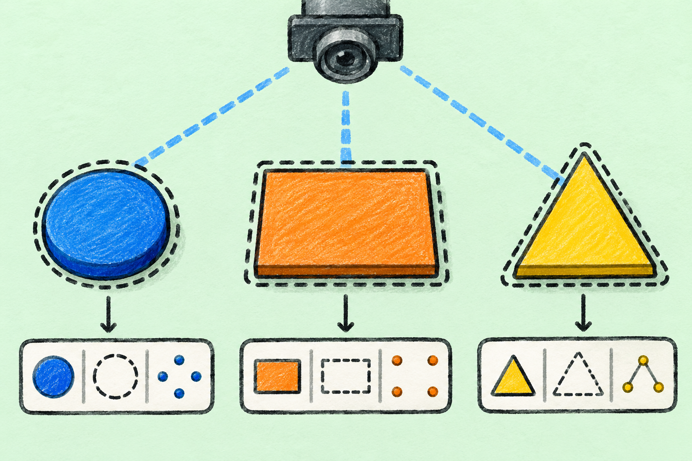
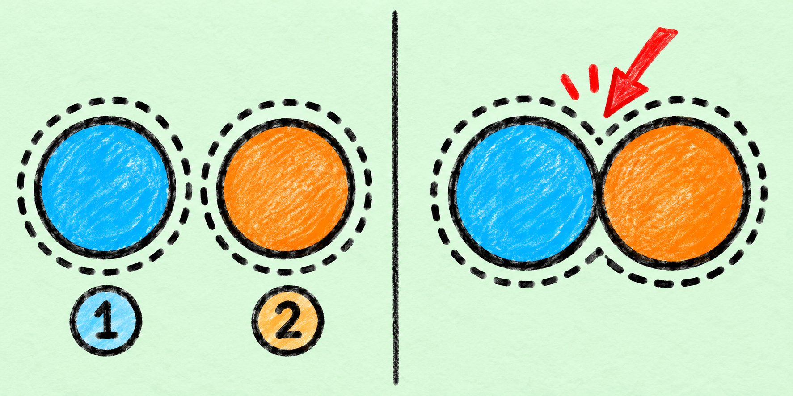
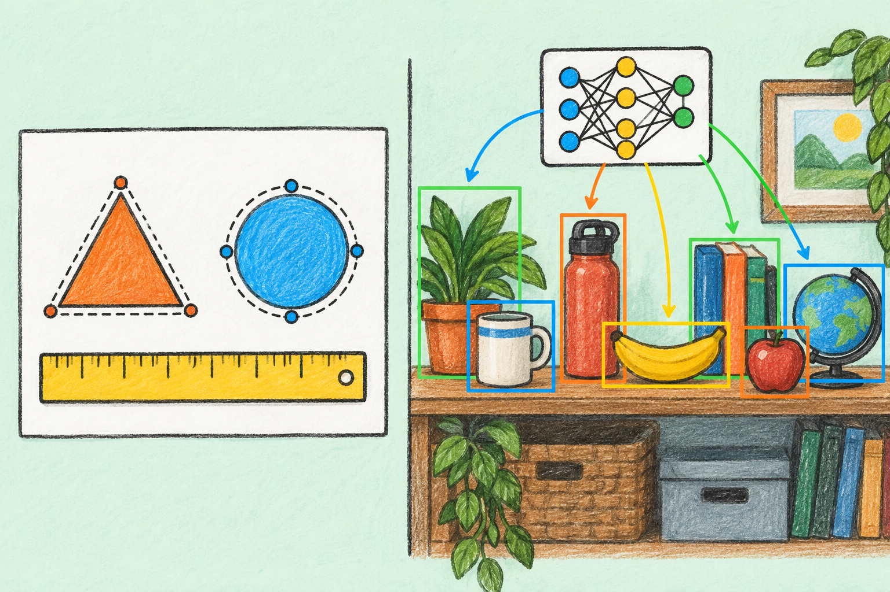

CAN A
SHAPE COUNT?
When an object has a clear boundary, a computer can turn its pixels into a contour. That contour can be measured, counted, and used for a simple shape decision.
PIXELS → BOUNDARY → MEASUREMENT → RULE
When an object has a clear boundary, a computer can turn its pixels into a contour. That contour can be measured, counted, and used for a simple shape decision.

A contour cannot start from a vague image. Thresholding makes a decision for every pixel: foreground or background. Connected foreground pixels become one candidate object.
The same contour gives different evidence. Use only the clue needed for the question, then draw the result on the image so a person can check it.
In the notebook, a controlled image contains one circle, one rectangle, and one triangle. The code thresholds it, finds contours, approximates their corners, and draws the result.
Contours count connected regions, not real-world intentions. If two objects touch, their boundaries can merge and the system may count one region instead of two.

Use contours when objects are simple, visible, and separate. Use a trained detector when real objects vary in texture, scale, background, viewpoint, or class.

Finish with evidence, not a guess. Write down what the contour rule measured and where it stopped being reliable.